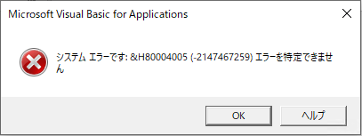
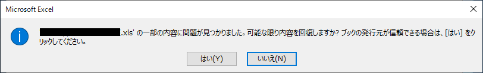
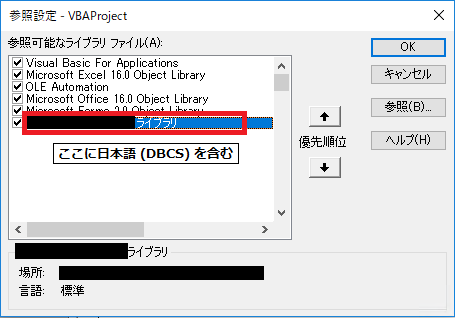
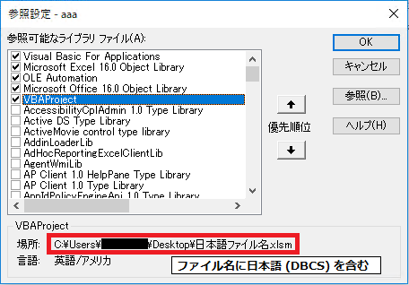

2020/5/7 Update
Office 365 月次チャネル / 半期チャネル、Office 2016 / 2019 市販パッケージ・PC プリインストール版向けに修正を公開しました。他のバージョン向けの修正は引き続き準備中です。
2020/5/8 Update
Office 2010 / Office 2013 MSI インストーラ向けに修正を公開しました。
2020/5/11 Update
Office 2016 MSI インストーラ向けに修正を公開しました。
2020/5/14 Update
Office 2013 クイック実行向け、Office 2019 ボリューム ライセンス向け、Office 365 半期チャネル (対象指定) 向けに修正を公開しました。
2020/6/3 Update
Windows Update / Microsoft Update カタログの対象として新しい KB 番号で修正を再公開しました。
こんにちは、Office 開発サポート チームの中村です。
前回の投稿でご案内したセキュリティ更新による想定された制限強化の他に、2020 年 4 月の更新を適用すると、日本語を含むモジュールへの参照で生じる問題が確認されました。本記事では、現時点で確認されている情報を記載します。本記事は随時更新予定です。
1. 現象
Excel 2010 / 2013 / 2016 / 2019 / Office 365 の Excel において、2020 年 4 月の更新を適用すると、VBA を含むファイルを開くときや、Excel アドインが有効化された状態で Excel を起動すると以下のエラーが発生します。


また、上記のエラーが発生した状態で、VBA を含むファイルを上書き保存すると、VBAProject が削除されます。
※ 上書きにより削除された VBAProject を復元することはできません。
2. 発生シナリオ
以下のようなシナリオで発生が確認されています。詳細は調査中のため、類似の他のシナリオで発生する可能性もあります。
パターンA
VBAProject から参照するライブラリ (DLL) の名前に日本語 (DBCS) 文字が含まれている場合

パターンB
VBAProject から参照する Excel ファイルの名前、またはそのファイルの格納パスに日本語 (DBCS) 文字が含まれている場合
(このパターンでは、参照元のファイル形式が Excel 97-2003 形式 (.xls や .xla) でのみ発生が確認されています。)

3. 対応状況
2020/6/3 Update
2020/5 に修正プログラムを公開しました。以下に記載されているビルド以降に更新すると本問題が修正され、日本語を含む場合も正常に VBA が読み込まれます。(ただし、既に問題が生じる環境で上書き保存され、削除された VBAProject は復元されません。)
MSI インストーラ形式 (Office 2010 / 2013 / 2016 のボリュームライセンス版) 向けには、2020/5 時点で公開された修正プログラムはダウンロードセンターからの手動更新のみとなります。
2020/6/3 に、Microsoft Update カタログに公開し、Windows Update や WSUS での自動更新が可能となりました。2020/6/3 に公開された修正は、KB 番号が新しくなっていますが、修正内容に変更はありません。
修正バージョン
Microsoft 365 （Office 365)
月次チャネル : 16.0.12730.20250
半期チャネル (対象指定) : 16.0.12527.20612
半期チャネル : 16.0.11929.20752 / 16.0.11328.20572
Office 2016 / Office 2019 (市販パッケージ・PC プリインストールのクイック実行版)
16.0.12730.20250
Office 2019 (ボリュームライセンス)
16.0.10359.20023
Office 2013 (市販パッケージ・PC プリインストールのクイック実行版)
15.0.5241.1000
Office 2016 (MSI インストーラ形式)
May 8, 2020, update for Microsoft Office 2016 (KB3101353)
https://support.microsoft.com/en-us/help/3101353
※ 緊急対応として公開された更新プログラムのため、Microsoft Update カタログからは入手できません。公開情報内に記載の Download Center のリンクから更新プログラムのインストーラを入手してください。
2020年6月2日、Office 2016 の更新プログラム (KB4484335)
https://support.microsoft.com/ja-jp/help/4484335
※ Microsoft Update カタログから入手可能な更新プログラムです。
Office 2013 (MSI インストーラ形式)
2020年5月6日、Microsoft Office 2013 の更新プログラム (KB2986208)
https://support.microsoft.com/ja-jp/help/2986208
※ 緊急対応として公開された更新プログラムのため、Microsoft Update カタログからは入手できません。公開情報内に記載の Download Center のリンクから更新プログラムのインストーラを入手してください。
2020年6月2日、Office 2013 の更新プログラム (KB4484356)
https://support.microsoft.com/ja-jp/help/4484356
※ Microsoft Update カタログから入手可能な更新プログラムです。
Office 2010 (MSI インストーラ形式)
2020年5月7日、Microsoft Office 2010 の更新プログラム (KB3015640)
https://support.microsoft.com/ja-jp/help/3015640
※ 緊急対応として公開された更新プログラムのため、Microsoft Update カタログからは入手できません。公開情報内に記載の Download Center のリンクから更新プログラムのインストーラを入手してください。
2020年6月2日、Office 2010 の更新プログラム (KB4484377)
https://support.microsoft.com/ja-jp/help/4484377
※ Microsoft Update カタログから入手可能な更新プログラムです。
4. 暫定回避策
発生パターンに応じて、以下の方法をお試しください。
- ライブラリ名を英数字のみに変更して、現象が発生しない環境に変更後の内容で登録し、ライブラリを参照する VBAProject を再コンパイルする
(実行環境に登録されているライブラリ情報が日本語のままでも、上記対応直後のファイルは動作します。ただ、ファイルの上書き保存などにより実行環境で再コンパイルが行われると再度現象が発生しますので、実行環境のライブラリ情報も英数字の名称で再登録することをお勧めします。 )
- 参照先の Excel ファイル名、または格納パスを英数字に変更し、現象が発生しない環境でこの Excel ファイルへの参照設定を再設定する
- 現象が発生しない環境で Excel ファイルを参照するファイルを開き、Excel マクロ有効ブック (.xlsm) 形式や Excel アドイン (.xlam) 形式で保存する (Excel 97-2003 形式でのみ発生するシナリオで有効)
今回の投稿は以上です。
本情報の内容 (添付文書、リンク先などを含む) は、作成日時点でのものであり、予告なく変更される場合があります。